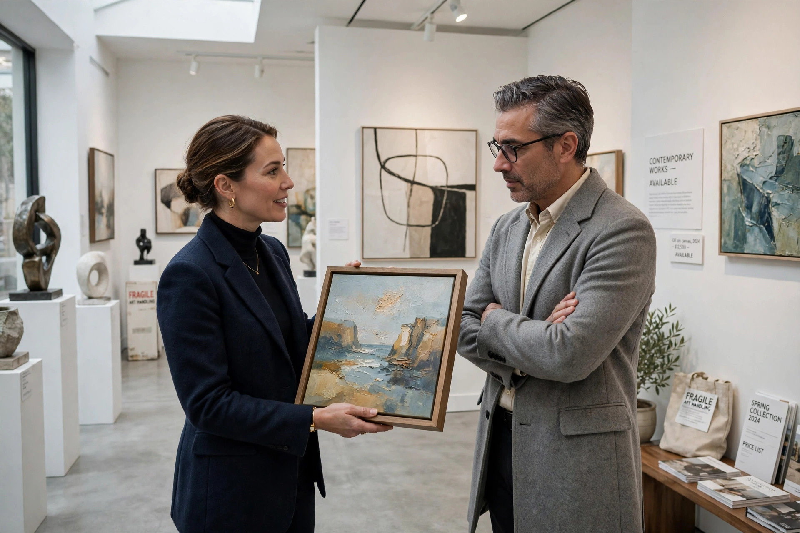

An art dealer is a person or company that buys and sells works of art, acting as an intermediary between artists and collectors, museums and investors. Dealers range from small gallery owners representing living artists to major international firms trading Old Masters and blue-chip modern works.

Primary-market dealers discover and promote artists, organise exhibitions, set prices and build collectors' confidence. Secondary-market dealers trade works previously sold, often at auction or by private treaty. Dealers advise on authenticity, condition and provenance, and may finance artists or guarantee auction results.
The modern dealer emerged in the 19th century — figures such as Paul Durand-Ruel championed the Impressionists — replacing the academy and salon as arbiters of taste. Famous 20th-century dealers include Ambroise Vollard, Daniel-Henry Kahnweiler, Leo Castelli and, today, mega-galleries such as Gagosian, Pace and Hauser & Wirth.
The largely unregulated art market has faced criticism over price opacity, conflicts of interest, money laundering and forgery, prompting anti-money-laundering rules for dealers in the EU, UK and US.